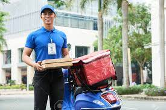
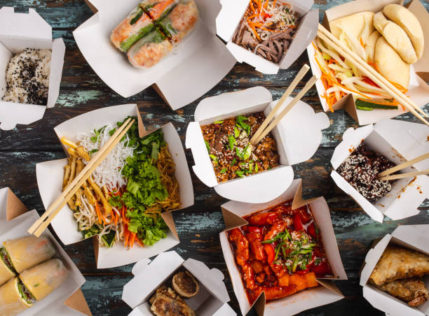
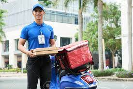
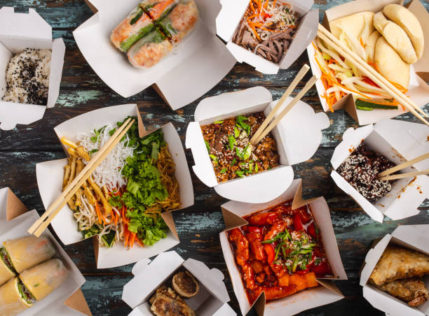

Retail food delivery is a courier service in which a restaurant, store, or independent food-delivery company delivers food to a customer. An order is typically made either through a restaurant or grocer's website or mobile app, or through a food ordering company. The delivered items can include entrees, sides, drinks, desserts, or grocery items and are typically delivered in boxes or bags. The delivery person will normally drive a car, but in bigger cities where homes and restaurants are closer together, they may use bikes or motorized scooters. Recently, autonomous vehicles have also been used to complete deliveries.
Customers can, depending on the delivery company, choose to pay online or in person, with cash or card. A flat rate delivery fee is often charged with what the customer has bought. Sometimes no delivery fees are charged depending upon the situation.[1] Tips are often customary for food delivery service. Contactless delivery may also be an option.